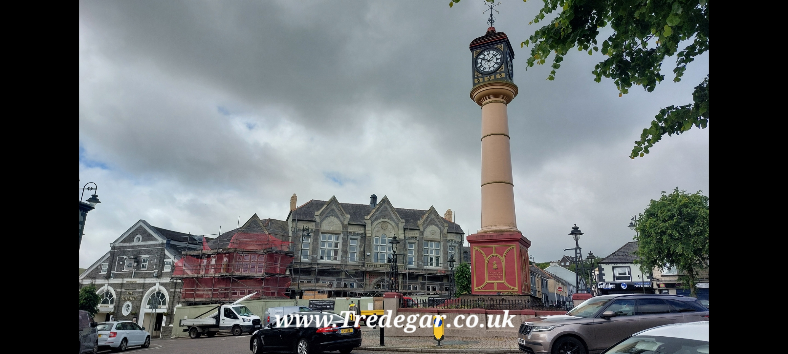

Tredegar is a vibrant valley town with a unique history and a population of around 11,000. It is situated in the South of Wales, 156 miles west of London and 30 miles north of Cardiff. The town has thrived for more than 200 years, its rich heritage fundamentally shaped by heavy industry—particularly iron and coal.
Today, after years of industrial decline, Tredegar is a community looking forward, actively building toward a brighter future by honoring and standing firmly upon the legacy of what came before.
This independent platform serves as a digital mirror for our community's passion and humor. We provide localized historical records, business directories, and support for voluntary activities, alongside the long-standing Tredegar forums.
This site is updated daily from the local community, business and tourist information and contributions from local people. We are completely independent, uncensored, run by people with a true love of the town and non-political. We have been supplying news and information (historic and current) on the town of Tredegar via computer since 1991. For more information on www.Tredegar.co.uk and how you can help this great town, please click here.
"Tredegar People, Basically the same as Ebbw People, But Nicer"

This website holds over 10,000+ images of our great town, including industrial layouts, schools, local employment, transport, including rail and bus, hi-definition historic maps, town parks including Bedwellty Park and Bryn-Bach Parc, historical records, shops, people of the town, sports clubs, and much more. It also contains more than 600 videos capturing the town over the years.
The www.Tredegar.co.uk website holds the largest collection of digital media, localized information, and historical records on the Internet.
Tredegar has been the birthplace and home to several world-renowned figures who left massive marks on culture and society, including political leader Neil Kinnock and legendary snooker champion Ray Reardon.
By far the most famous individual to rise from our valley hills was Aneurin Bevan.
As a young miner working directly in local pits, Bevan witnessed firsthand how the community pooled resources to build the Tredegar Medical Aid Society. When he went on to become Minister of Health, he weaponized that miniature, community-run model to construct the entire blueprint for the British National Health Service (NHS) in 1948—giving healthcare to the world from the heart of Tredegar.
The www.Tredegar.co.uk site stores a vast amount of digital footage, historical documents, and information on Aneurin Bevan.
In 2026, the website layout was updated, and new team members were added to continue the archiving work that first started back in 1991. For now, the system remains closed to the general public, and access is strictly via invitation only. It is planned to open up public sectors of the website in the near future.
If you have historical content to contribute or want to request an access invitation, please visit our Contact Page.